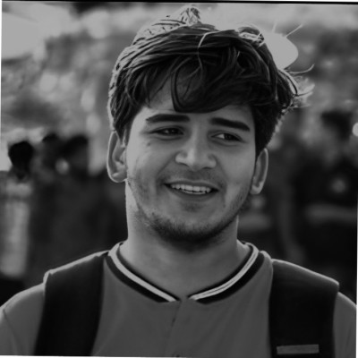

Indian Institute of Technology Roorkee
Passionate researcher focused on travel demand modeling, intelligent transportation systems, and data-driven mobility analysis using large-scale transportation datasets.

IIT Roorkee
Transportation Engineering
Big Data
Python, R, MATLAB, Q-GIS
Development of a wireless system for real-time passenger counting to support transit planning and operations (2024–2025).
Integrated crowding information into passenger information systems using electronic ticketing data (2023–2025).
Quantified economic impacts of traffic congestion and delays, analyzing their contribution to GDP losses (Jan 2021 – May 2021).
An observational study of city bus user journey length patterns in Bhubaneswar (Jun 2020 – May 2021).
Planning and geometric design of a bus terminal as part of undergraduate coursework (Jun 2017 – May 2018).
Azad Bhawan
Spearheaded and organized cultural events throughout the year, managed event budgets, and led volunteer teams to plan, execute, and promote cultural activities.
2nd International Conference (TIPCE)
Part of the organizing committee for the 2nd International Conference on Transportation Infrastructure Projects. Coordinated execution, handled abstract submissions, and conducted a two-day cultural event during the conference.
Inter IIT Sports Meet 2019
Led a transportation team managing logistics, scheduling, and coordination to ensure smooth and timely movement during the event.
3rd Open Day
Responsible for crowd control and coordination, ensuring timely and accurate communication and smooth execution of open-day activities.
Annual Cultural Event
Planned and managed cultural events including dance, singing, skits, and drama; handled staffing, budgeting, and post-event review.
AD-TECH
Managed marketing and fundraising activities, developed the marketing team, handled budgets, and conducted post-event evaluations.
AD-TECH
Worked as part of the organizing team to conduct multiple events and collaborated closely with seniors and cross-functional teams.